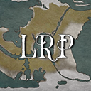

I invite any1 who sees to my discord-based fantasy roleplay server. We is interactive and group of people who work on each others ideas plans to generate a story that is fun and for all players involved. The server does not enforce any DnD mexanics and foc0ses instead on character development through st0ry, instead of #'s. We are writers not players. We are looking 4 people who want to make their mark on our world with their meme partake in worldly events and most of all have a fun time collaborating with us in building a better and more dynamic story. With that all said and done what exactly is Lucent Lucent a fantasy world currently wrote with a number of different problems include war chaos rampant dragons and giants and some dickmunchers who just don't know how to dress properly. All some people want is peace while all some others want is war Come join us and make your not on the world of Lucent whether it be through finding peace running a local winery or climbing to the top of the black market food chain The world is your oyster its your job to open it
